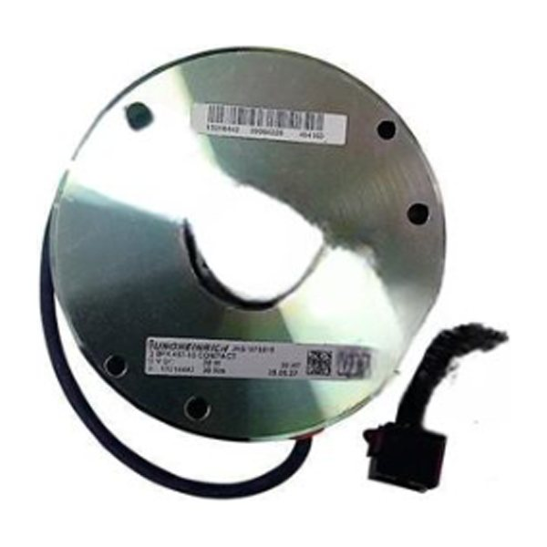

Available
Email for a quote
Jungheinrich 50988-401 Brake Assy
| OEM part number | 50988-401 |
| Fits | Jungheinrich |
| Models / notes | ERE225 |
| Category | Brakes |
| Type | Aftermarket replacement |
Send us the quantity you need and we'll reply with pricing, usually within 24 hours. Not the exact part? We can source it. Send the part number or a photo.